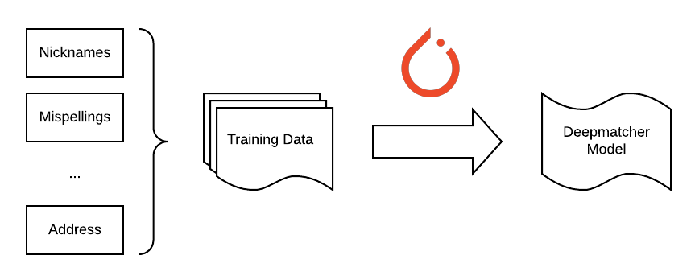
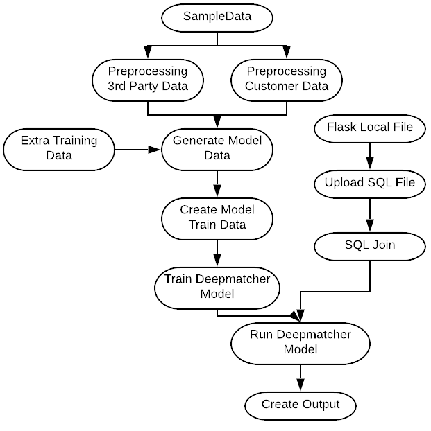
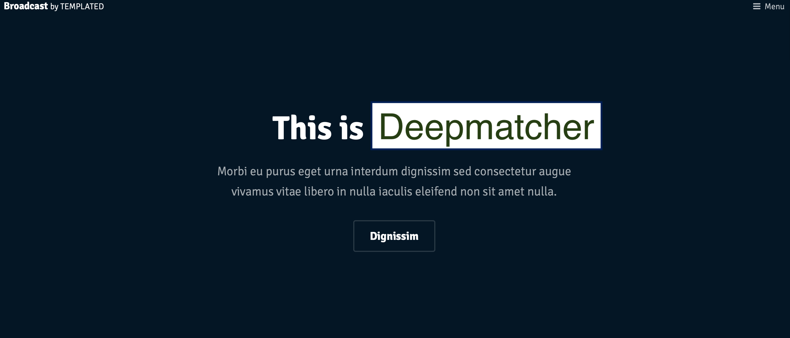

Deepmatcher
Business Objective
Challenges
- Nicknames vs full names
- Mispellings in names
- Initials vs full names
Objective
- Produce high quality matches
- Develop an automated process
- Easily accessible interface for users
Entity Matching
"The results show that DL does not outperform current solutions on structured EM, but it can significantly outperform them on textual and dirty EM"
Deep Learning For Entity Matching: A Design Space Exploration

The Magic of NLP
Used existing matched data as labels to feed into Deepmatcher model - results were very accurate!
Objective
- Produce high quality matches - Deepmatcher ✅
Pipelining
The more you plan, the luckier you get
Luigi
Pipelined with the old favorite, luigi. Highlights included:
- Code for read/write to Azure
- SQLServer tasks with descriptor classes for salted targets - yuck!
Task Graph
Objective
- Produce high quality matches - Deepmatcher ✅
- Develop an automated process - Luigi pipeline ✅
Front-End
Bootstrap and Flask
Security measures: Flask OIDC configured with Azure SSO - Azure app registration.
Deployment
- Dockerize app and deploy to Azure container instance!
- ... but container instances don't support GPU containers
- Ok, write it without GPU!
- ... but still doesn't work with virtual nets - isn't secure :(
- So, deploy to kubernetes cluster!
- ... but memory limit on container - model file too big
Objective
- Produce high quality matches - Deepmatcher ✅
- Develop an automated process - Luigi pipeline ✅
- Easily accessible interface for users - Flask website deployed to Kubernetes ⁇
Summary
Objective
- Produce high quality matches - Deepmatcher ✅
- Develop an automated process - Luigi pipeline ✅
- Easily accessible interface for users - Flask website deployed to Kubernetes ⁇